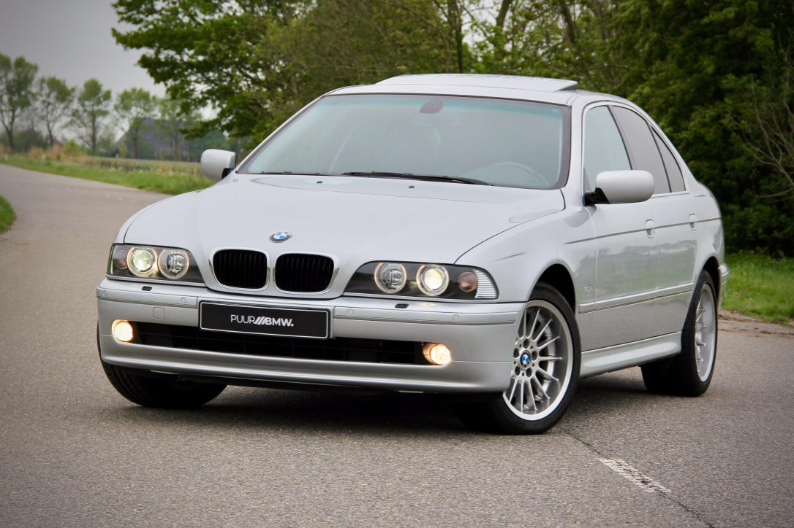

Bayerische Motoren Werke Aktiengesellschaft (AG) (Türkçe: Bavyera Motor Fabrikaları Anonim Şirketi) veya yaygın olan kısaltmasıyla BMW, 1916 yılında kurulan Alman, otomobil, motosiklet, motor ve bisiklet üreticisidir. BMW ayrıca, Mini ve Rolls-Royce, otomobil şirketlerinin sahibidir. Çalışan sayısı 107.539 dur. 2007 cirosu 56,018 Milyar Avro’dur, aynı yıl 1.541.503 otomobil üretmiştir. Bu üretimin 1.302.774 adedi BMW markası altındadır. Ayrıca aynı yıl motosiklet üretimi 103.396 adettir. Sadece motor sporlarına özel BMW M'i de bünyesinde bulundurur. Şirketin sloganı ve resmi kurumsal dili İngilizcedir. Sloganı 'sheer driving pleasure' (Gerçek Sürüş Keyfi). Bu sloganla, ünlü Alman teknolojisini ve AR-GE'deki kendine güveni vurgulamaktadır. Şirket, 1913 yılında Karl Friedrich Rapp tarafından Almanya'nın Münih kentinde kurulmuştur ve mimari yönden meşhur merkezi hâlen oradadır. İlk zamanlarda sadece uçak motoru üreten şirket, 1928 yılında satın aldığı Fahrzeugtechnik Eisenach A.G. otomobil şirketinden sonra otomobil üretimine girmiştir. BMW ilk otomobil seri üretimini 1929'da 3/15 PS ismindeki otomobil ile yapmıştır. 1945 yılında 2. Dünya Savaşi' nın sona ermesi ile birlikte müttefik kuvvetler firmanın fabrikalarını kullanılamaz hale getirmiş ve BMW 1948 yılında daha ucuz motosiklet üretimine geçene kadar mutfak ve bahçe malzemeleri üretmiştir. BMW' nin otomobil piyasasına dönüşü 1950'li yıllarda olmuş olsa da düşük satışlar pek iç açıcı olmamış ama firma 1960'lı yıllarda muhtelif spor sedan yapan bir firmaydı. Bu yüzden parçalı amblemin mavi kısmı gökyüzünü beyaz kısmı da uçak pervanesini temsil etmektedir. Başka bir iddia ise amblemdeki mavi beyaz renklerin Bavyera eyaletinin renklerinden geldiğidir.
Her Gün Yeni Araba Yeni İçerik